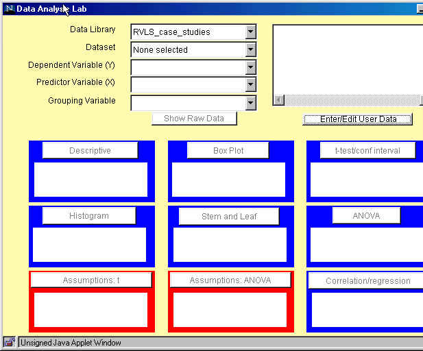

Rice Virtual Lab in Statistics has already been mentioned when we discussed about teaching tools. Now we want to see how its Analysis Lab can be used as a statistical package to perform statistical analyses.
When the Rice Virtual Lab homepage is loaded, click on "Analysis Lab" to activate the program.
When the page is fully loaded, click on the "Analyze" button and the following Data Analysis Lab window will appear:

Using built-in datasets
Now, you can select Data Library and a Dataset within the data library. These datasets are taken from different introductory statistics textbooks.
Select now Moore_McCabe data library and the p36 dataset. The description of tha data appears in the right-hand side window.
Select now "Calories" as dependent variable and "Sodium" as predictor variable. Note that some of the blue and red windows below become activated. In each window, an explanation of the available analysis is displayed.
Click now on Descriptive window. A window containing descriptive statistics for the dependent variable "Calories" will appear. Similarly, by clicking on Box plot, a window containing a box plot for "Calories" will appear.
Click now on Histogram window. The window with a histogram for "Calories" appears. Note that the applet allows some interactivity, i.e., you can change the bin width and the lower limit of the first bin. The histogram applet automatically provides auxiliary graphs of the cross-validation functions that estimate the quality of the currently displayed histogram. Smaller values of the cross-validation function generally imply smaller errors in the approximation.
Click now on Correlation/Regression window. A window with the scatterplot of calories on sodium will appear. You can choose whether or not to show the regression line and the numerical results of the regression analysis.
Exercise 1 (7 min.)
Continue clicking on other active blue and red windows to see what happens. Are there windows that are not active? Why?
Now go back to the variable selection and choose "Type" as Grouping Variable. What changes in the description of the analyses in the blue and red windows have you noticed? Which windows have become active? Which ones are not active now? Why?
Note that you can always go back to the starting window, where you can find links to the on-line documentation.
Using user-entered datasets
We can also analyze our own data using Data Analysis Lab. By clicking on Enter/Edit User Data a clipboard will appear. You can either type in the data directly or copy/paste the existing datafile (opened in a text editor).
Now open the following file: http://www.math.usu.edu/~vukasino/teaching/spring2000/complab/student_data1.prn.
However, we cannot use this data directly, because it contains non-numerical values. The Data Analysis Lab requires all data to be numeric. So first we have to recode the nonnumerical variables (Gender, Eyecolor, Major) and replace them by the coding integer values, ranging from 1 to the number of levels of the variable.
To recode the data, open the file in a text editor that has a "Replace" function (such as Word, Wordpad, UNIX Textedit) and recode the non-numerical variables as follows:
After recoding the data, while still in the text editor, select "Select all" from the "Edit" menu and then "Copy". Then change to the Data Analysis Clipboard window and paste the data (by clicking on "Paste" in the "Data" menu at the top of the window). If this does not work, paste the data by pressing "Control" and "v" key at the same time. Do not delete the first row which contains the names of the variables. Click on Accept Data. The clipboard window should disappear.
When the data are accepted, the names of the variables will appear in the window on the right. In the selection menu on the left, you can choose any of the variables as dependent or predictor variable. However, only "Gender", "Eyecolor", and "Major" are listed as possible grouping variables. Actually, all variables that have integer values from one to (any) number of levels without any gaps will be listed as grouping variables.
Now choose "Age" as dependent variable. Click on Descriptive window to obtain summary statistics for Age. Click on Box Plot, Histogram and Stem-and-Leaf windows.
Then go back to the selection menu and select "Siblings" as dependent variable and "Age" as predictor variable. Click on Correlation/regression window to perform a regression analysis of "Siblings" on "Age".
Again, go back to the selection menu and select "Gender" as grouping variable. Note that all the windows change and now offer separate analyses for each level of the grouping variable.
Homework problems
Using Rice's Data Analysis Lab Package, solve the problems listed below. Describe exactly all steps needed to obtain the required results (including data editing/recoding). If you encounter any problem (e.g., if a certain applet is not working or if you can clearly see that the results are wrong) mention this explicitely in your written report.